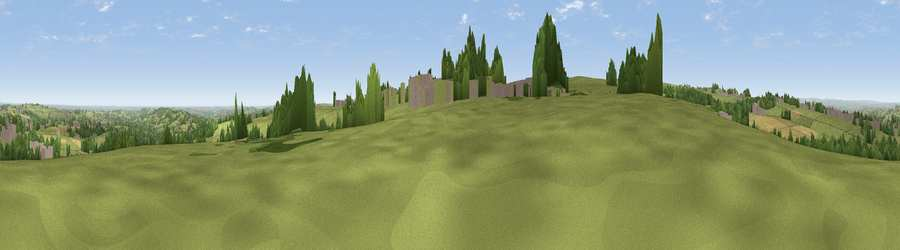

Viewpoint near Birds Edge
#17403 in England · top 26% of its area beats it · near Birds Edge · path 162 mWhere it is
The exact computed spot (SE 21075 07625). Click the marker for map links.
Public access: the nearest public right of way is about 162 m away — the final stretch may cross private land. Computed from Natural England's CRoW access layer and OpenStreetMap rights of way — not the legal definitive map. Always verify locally.
The view, rendered

A 360° render of this exact spot computed from the terrain model, tree cover and land cover — summer colours, afternoon light, calibrated against photographs of famous viewpoints. Real trees, hedges and buildings will differ in detail.
The panorama
Grey silhouette: terrain skyline in each direction (720 bearings, Earth curvature and refraction included). Dashed green: skyline with trees (+15 m) and buildings (+8 m) as obstacles. Blue strip: how far the ground is visible on each bearing.
Where the view opens
Wedge length = distance to the farthest visible ground on that bearing (vegetation-aware). Rings at 10, 25 and 50 km.
What fills the view
65% grassland · 21% woodland · 8% cropland · 6% built-up
Angular shares of the visible panorama (visual magnitude), not map area. Landscape diversity 0.43 (0–1 Shannon).
Key numbers
More beautiful places nearby
The staircase of upgrades: each row has a higher view potential than everything closer. Driving times are estimates from straight-line distance, calibrated against real road routing — check an actual route before setting out.
| Place | Direction | Drive | Score |
|---|---|---|---|
| Viewpoint near Birds Edge | SW · 1 km | ~3 min | 57.6 |
| Viewpoint near Jackson Bridge | W · 3 km | ~8 min | 73.5 |
| Viewpoint near Wharncliffe Side | SE · 15 km | ~27 min | 75.0 |
| Viewpoint near Wharncliffe Side | SE · 15 km | ~27 min | 75.2 |
| Viewpoint near Greenfield | WSW · 21 km | ~36 min | 76.0 |
| Viewpoint near Carrbrook | WSW · 23 km | ~38 min | 77.1 |
| Viewpoint near Otley | N · 37 km | ~55 min | 77.5 |
| Darwen Hill | WNW · 55 km | ~77 min | 80.7 |
53.56482, -1.68328 · source: screening · position refined by local search. Computed location — check access rights before visiting.